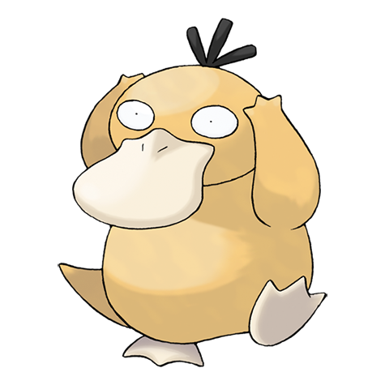

Pokemon Negro y Pokemon Blanco, son dos videojuegos de Pokémon pertenecientes a la quinta
generación. Fueron anunciados oficialmente
por la web oficial de Pokémon en Japón el día 9 de abril de 2010. Se conoce que salieron a la venta
el 18 de septiembre del 2010 en Japón,
También llamados "Pokémon Edición Negra" y "Pokémon Edición Blanca", fueron lanzados el 18 de
Septiembre en Japón y en tan solo 2 días obtuvo
el récord de más vendidos en menos tiempo de Nintendo, con 2.63 millones de copias vendidas. Por su
parte en España salió a la venta
el 4 marzo de 2011 y en América el 6 de marzo del mismo año.
Estos videojuegos transcurren en la región Teselia. En la edición Negra esta región sufre una
remodelación mas futurista en algunos
de sus lugares, mientras que en la edición Blanca esta región es muy pintoresca y tradicional. Estos
cambios se pueden observar en
Ciudad Caolín, y en el Bosque Blanco que es sustituido en la edición Negra por Ciudad
Negra.
NIKIDEX. (2021). Pokémon Negro y Pokémon Blanco. 28 de febrero del 2021, de FANDOM Sitio web:
https://pokemon.fandom.com/es/wiki/Pok%C3%A9mon_Negro_y_
Pok%C3%A9mon_Blanco#Exclusivos_de_Pok.C3.A9mon_Negro
Pokemon Negro y Pokemon Blanco, son dos videojuegos de Pokémon pertenecientes a la quinta
generación. Fueron anunciados oficialmente
por la web oficial de Pokémon en Japón el día 9 de abril de 2010. Se conoce que salieron a la venta
el 18 de septiembre del 2010 en Japón,
También llamados "Pokémon Edición Negra" y "Pokémon Edición Blanca", fueron lanzados el 18 de
Septiembre en Japón y en tan solo 2 días obtuvo
el récord de más vendidos en menos tiempo de Nintendo, con 2.63 millones de copias vendidas. Por su
parte en España salió a la venta
el 4 marzo de 2011 y en América el 6 de marzo del mismo año.
Estos videojuegos transcurren en la región Teselia. En la edición Negra esta región sufre una
remodelación mas futurista en algunos
de sus lugares, mientras que en la edición Blanca esta región es muy pintoresca y tradicional. Estos
cambios se pueden observar en
Ciudad Caolín, y en el Bosque Blanco que es sustituido en la edición Negra por Ciudad
Negra.
NIKIDEX. (2021). Pokémon Negro y Pokémon Blanco. 28 de febrero del 2021, de FANDOM Sitio web:
https://pokemon.fandom.com/es/wiki/Pok%C3%A9mon_Negro_y_
Pok%C3%A9mon_Blanco#Exclusivos_de_Pok.C3.A9mon_Negro
|
¿Por qué elegí Pokemon Negro?
|
 Elegí a Pokemon Negro porque fue de los primeros videojuegos que más enganchado me tuvieron, pasé
mucho tiempo capturando pokemon, explorando el mapa, consiguiendo medallas y todo lo necesario para
poder acceder a la Liga Pokemon; quizás por la Liga Pokemon es que me quedo con este videojuego como
mi favorito debido a que nunca llegue a completar el juego al cien por ciento.
Yo no contaba con una Gameboy para jugarlo, yo utilice un emulador de gameboy en la computadora y asi
fue como lo jugué, por
problemas con esa computadora fue que no lo logré completar el juego y me quedé con esa espinita de que nunca
gané la Liga Pokemon. A día de hoy
me sigue interesando el juego a pesar que ya es algo viejo; no me molestaría para nada volver a
jugarlo desde el inicio
y echarle unas horas a este juego.
Esta saga de juegos lanzada por Nintendo siempre son una diversión garantizada, son simples en
gráficos, en contenido y la historia
suele ser muy similar de una entrega a otra, pero siempre te divertirás jugandolos.
Elegí a Pokemon Negro porque fue de los primeros videojuegos que más enganchado me tuvieron, pasé
mucho tiempo capturando pokemon, explorando el mapa, consiguiendo medallas y todo lo necesario para
poder acceder a la Liga Pokemon; quizás por la Liga Pokemon es que me quedo con este videojuego como
mi favorito debido a que nunca llegue a completar el juego al cien por ciento.
Yo no contaba con una Gameboy para jugarlo, yo utilice un emulador de gameboy en la computadora y asi
fue como lo jugué, por
problemas con esa computadora fue que no lo logré completar el juego y me quedé con esa espinita de que nunca
gané la Liga Pokemon. A día de hoy
me sigue interesando el juego a pesar que ya es algo viejo; no me molestaría para nada volver a
jugarlo desde el inicio
y echarle unas horas a este juego.
Esta saga de juegos lanzada por Nintendo siempre son una diversión garantizada, son simples en
gráficos, en contenido y la historia
suele ser muy similar de una entrega a otra, pero siempre te divertirás jugandolos.

El juego empieza dándote la bienvenida al mundo de los Pokémon.
Te da la opción de elegir entre chico o chica y te pide tu nombre, para usarlo como
nombre de tu personaje. Luego de esto empiezas tu aventura al nuevo mundo de los Pokémon en la
región de Teselia.
Más adelante de piden escoger a tu pokemon inicial entre un Snivy, un Tepig y un Oshawott.
Debes de ir subiendo de nivel a tus pokemon para que tengan más vida, ataque y nuevos ataques
los cuáles te permitirán caputarar nuevos pokemon y vencer a los rivales que te encuentres a lo
largo del viaje por las distintas ciudades.
Dentro de los arbustos y cesped altos encontrarás a pokemones salvajes los cuales tendrás la opción
de luchar,
intentar huir o capturarlos. Si quieres capturarlos tendrás que bajarles la vida al mínimo para
tener más probabilidades que la pokeball acierte.
 En tu travesía deberás ir venciendo a los líderes de los distintos gimnasios que encontrarás en las
ciudades,
cuando tengas todas las medallas de los gimnasios podrás acceder a la Liga Pokemon pero debes tener
en cuenta
que la Liga Pokemon es mucho más complicada que los gimnasios así que debes ir con tus mejores
Pokemon para afrontar
este complicado duelo.
En tu travesía deberás ir venciendo a los líderes de los distintos gimnasios que encontrarás en las
ciudades,
cuando tengas todas las medallas de los gimnasios podrás acceder a la Liga Pokemon pero debes tener
en cuenta
que la Liga Pokemon es mucho más complicada que los gimnasios así que debes ir con tus mejores
Pokemon para afrontar
este complicado duelo.